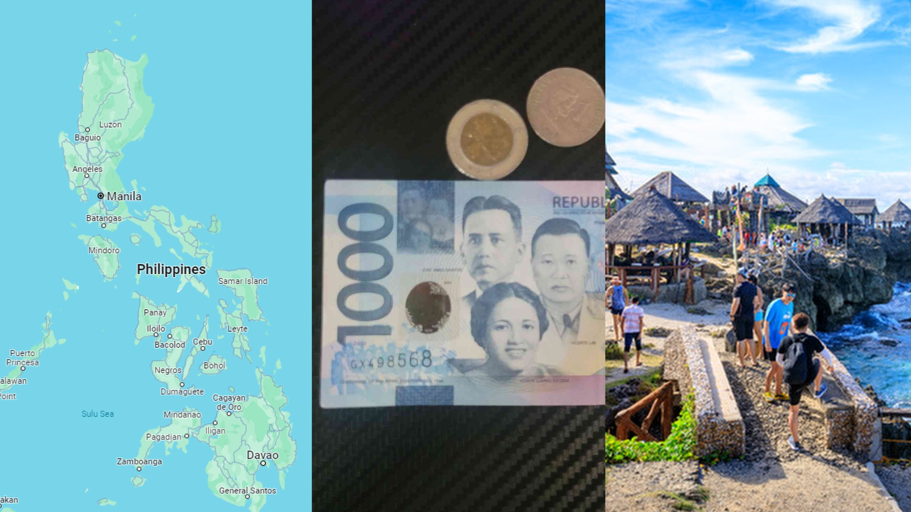

What is the Philippines?
The Philippines is a country in Southeast Asia made up of over 7,000 islands. Imagine a place with beautiful beaches, lush forests, and friendly people. Its capital city is Manila, where you can find a mix of modern buildings and historical landmarks.
People here speak Filipino and English, and they're known for their warm hospitality and close-knit families. The food is delicious, with dishes like adobo and sinigang that reflect a blend of indigenous, Spanish, and American influences.
Tourism is a big deal in the Philippines because of its stunning natural beauty. Think crystal-clear waters, vibrant coral reefs, and white sandy beaches. Places like Boracay and Palawan are famous for their breathtaking scenery and adventurous activities like snorkeling and diving.
While the Philippines has been making progress in its economy, there are still challenges like poverty, corruption, and natural disasters. But despite these challenges, the Filipino spirit remains resilient and hopeful for a better future.

The Philippino Flag
The flag of the Philippines is rich in symbolism, each element representing a significant aspect of the nation's history and values:
Colors: The flag consists of equal horizontal bands of blue (on top) and red (on the bottom), with a white equilateral triangle on the hoist side. Blue symbolizes peace, truth, and justice, while red represents patriotism and valor.
Triangle: The white triangle represents equality and fraternity among Filipinos. It stands for the Katipunan, a revolutionary society that fought for Philippine independence during the Spanish colonial period.
Sun: Inside the white triangle is an eight-rayed golden sun, known as the "Sun of Liberty" or "Sun of May." Each ray represents one of the first eight provinces that revolted against Spanish colonial rule. The sun symbolizes freedom, unity, and independence.
Stars: Within the triangle, there are three five-pointed golden stars representing the three main geographical regions of the Philippines: Luzon, Visayas, and Mindanao. These stars symbolize the unity and equality of these regions under one nation.
Overall, the flag of the Philippines embodies the spirit of freedom, independence, and unity among its diverse people. It serves as a powerful symbol of national identity and pride.